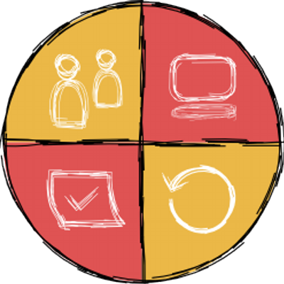

Coding Dojo Vienna

Softwerkskammer Wien
Twitter: @swkWien / #CodingDojoVie
Conflicting Refactorings
-
- Programming in small groups
- Free Language
The dilemma:
-
- Two smells:
- To get rid of one, you introduce the other
Middle Man (Person?)
-
- The only thing an object does is forward calls from one object to another one.
- To get rid of this smell, call the target object directly, and remove the then useless middle
man.
Round 1
-
- Find a partner and agree on a programming language.
- Work deliberately, together, and test-driven!
Retrospective
-
- Were you successful?
- How did you solve the dilemma?
- What was the most difficult part?
- What did you learn?
Round 2
Start over
or
Continue
or
???
Retrospective
- Were you successful?
- How did you solve the dilemma?
- What was the most difficult part?
- What did you learn?
Thank you for joining!
Follow #CodingDojoVie or @swkWien